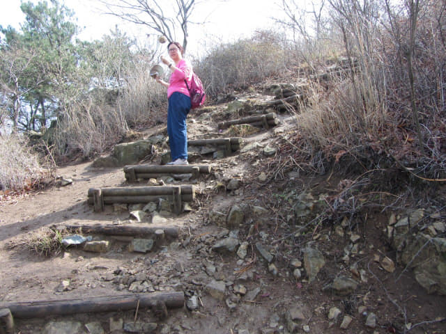

約早上九時十分從靈鷲山「진달래기념비」登山口展開跨越靈鷲山行程, 一直沿陡斜道路往上走, 拐了幾個「S」彎後, 抬頭一望, 在叢林間隱約看見山谷另一面的山頭上, 好像鋪上了一片片紅色的地毯, 從左至右, 看清楚, 是漫山紅色的杜鵑花! 已經感到景色的壯麗! 這是我第一次看到那麼壯麗的杜鵑花群, 心情特別興奮, 很想立即飛越山谷, 給杜鵑花擁抱。
金達萊是朝鮮國花, 學名迎紅杜鵑, 別名映山紅、尖葉杜鵑、興安杜鵑, 主要生長於山坡, 它的開放標誌春天到來, 是冬天過後山野中開放的第一朵花。金達萊象徵長久的繁榮、喜悅和幸福。


我們現在的位置, 這裡可以眺望對面山頭的杜鵑花群。
這裡其實是一個分叉路口, 但地圖上沒這標示, 從方向來看, 估計右邊下山的路是通往另一條登山路的。
繼續往上走。可以清楚眺望山下的煉油區, 面積真是很大; 連接貓島及光陽的李舜臣橋(이순신대교)也可看到。
接著的山路開始難走了, 首長是一段向上陡斜及濕滑的泥濘小徑。
然後是濕滑梯級。
又是一段崎嶇山路。
接著又是一段長長梯級。
走完梯級, 迎面是一段佈滿亂石的山路。
繼續往上走, 漫山的粉紅色杜鵑花在對面山頭向我們不斷揮手, 鼓勵我們前進。

停下來! 看看對面山頭! 漫山都是粉紅色的杜鵑花! 太美了!


回頭望望, 腳下便是煉油廠。
欣賞完風景, 稍休一會, 繼續往上走。要看好風景, 當然要付出, 這才會懂得欣賞和珍惜!
來到這高度, 只要放眼遠望, 就可以看到遍佈整個山頭的杜鵑花。
繼續往上走。
來到一個好像山坳的小平原, 景色豁然, 這裡是休息的好地方, 可以順便眺望四周景色。
這裡已經有一簇簇的散落杜鵑花群, 看來已經進入了金達萊 (紅杜鵑)群落地! 下面山頭被粉紅色的花覆蓋著, 十分壯觀, 看來是櫻花, 如果置身其中, 會否以為已經去了天堂!
當然要記錄這一刻。
在山坳欣賞完四周景色, 繼續沿山路往上走。
海拔330米「갈림길」分叉路
來到海拔330米的一個山峰上, 迎面是一個分叉路口 (갈림길): 左邊下山的路是往「골영재」, 然後沿公路往煉油廠, 也是另一個登山口; 右邊是往靈鷲山山頂 「영취산정상(진례봉)」。
我們的目的是穿越金達萊 (紅杜鵑)群落地, 在這裡轉右走。
嘩! 迎面是粉紅花海的紅杜鵑群落地, 接著我們便是從高高的紅杜鵑花叢中的小路繼續登上靈鷲山山頂, 將會是一個奇異的旅程!

{kind=link}
{kind=link}